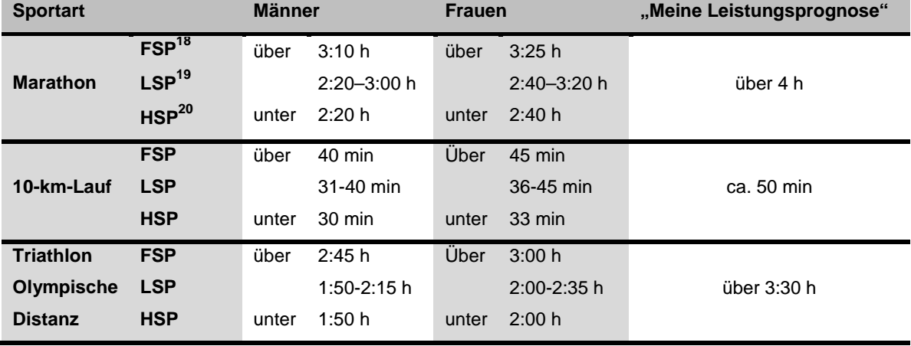
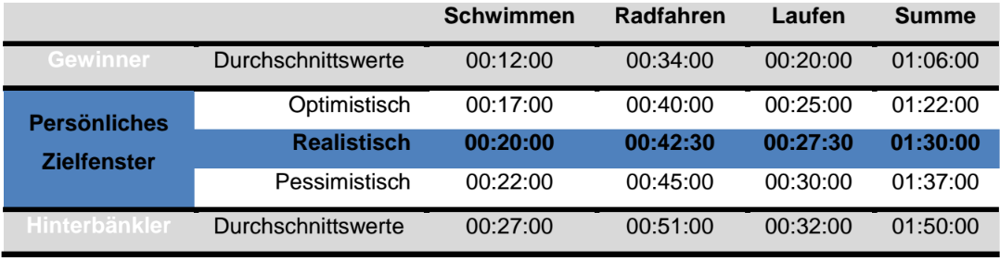
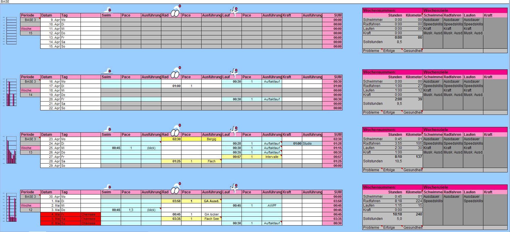
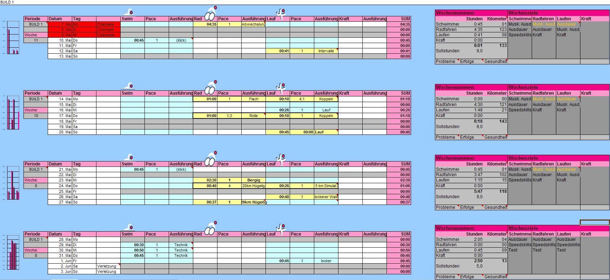
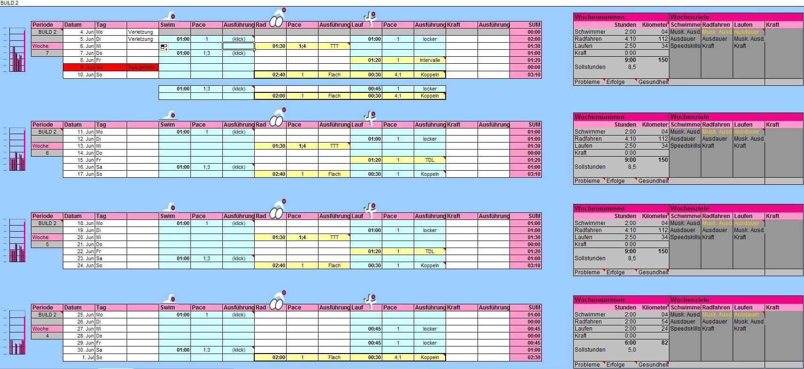
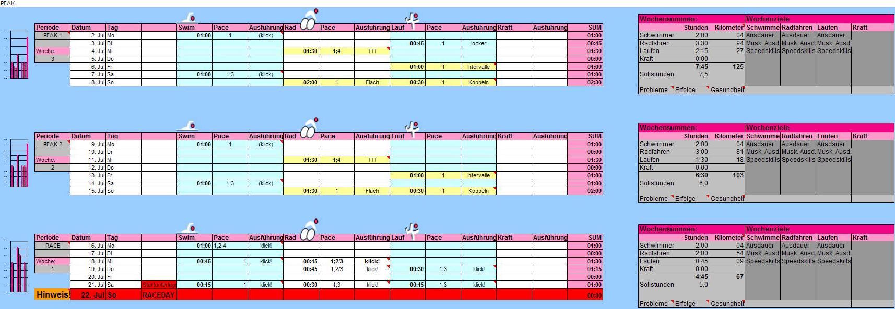
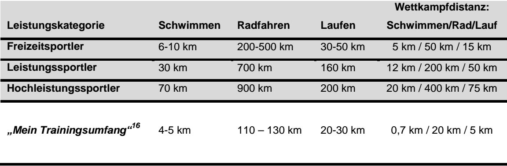
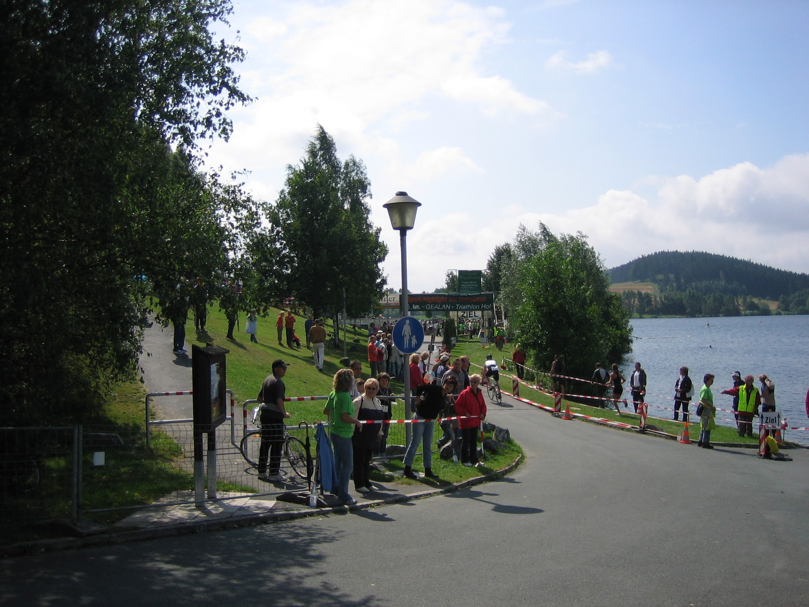
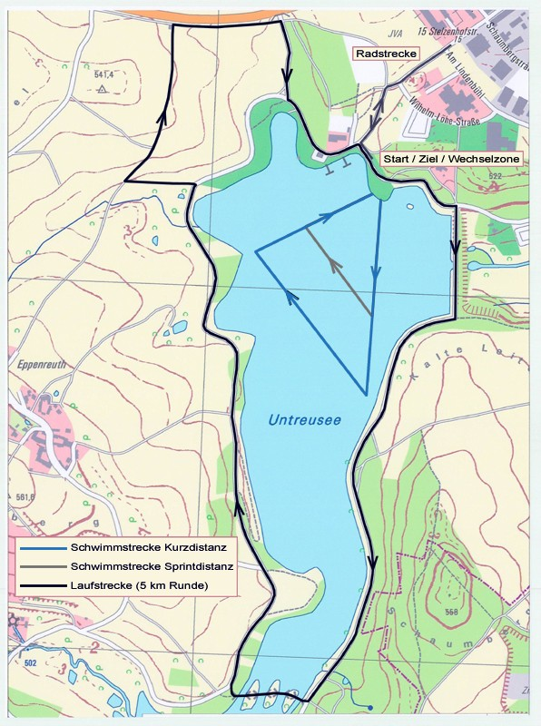
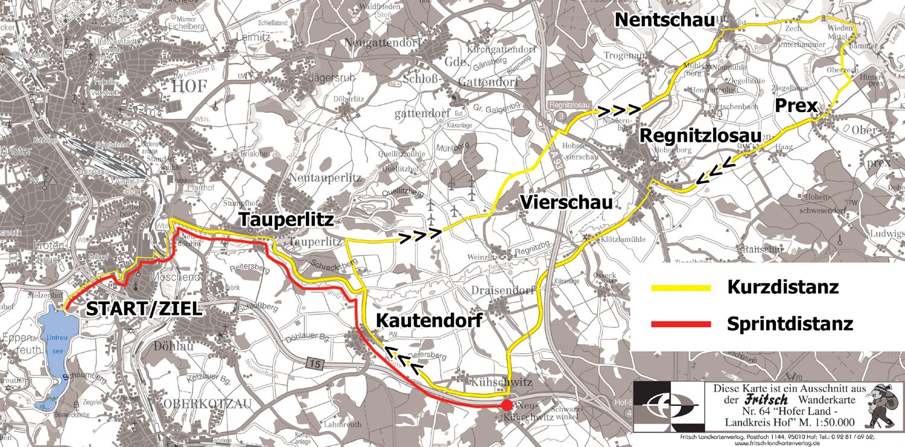

Volkssport Triathlon – Herausforderung Sprintdistanz/Volkstriathlon
Heute vor 10 Jahren gebe ich mein Triathlon-Debüt. Es lohnt sich also einen Blick zurück zu werfen und meine alte Studienarbeit zu entstauben.

[…] Um meinen ersten Triathlon auch erfolgreich bestehen zu können und meine gesteckten Ziele erreichen zu können, habe ich mich mit 0,7 km Schwimmen, 20 km Radfahren und abschließenden 5 km Laufen für den Volkstriathlon entschieden. Dieser ist der perfekte Einstieg in eine mittlerweile sehr beliebte Ausdauersportart. Größere Herausforderungen will ich mir eventuell für spätere Rennen aufheben.[…] Unter dem Gesichtspunkt, dass dies mein erster Triathlon sein wird, versuche ich mich gezielt auf diese Herausforderung vorzubereiten. Auch wenn ich nicht alle persönlich gesteckten Ziele und Vorgaben umsetzen kann und wahrscheinlich auch nicht umsetzen werde, gibt es doch nur ein Ziel: Das erste Finish am 22.07.2007.
Faszination, Mythos, Boom, Trainingsgestaltung: Herausforderung Sprintdistanz/Volkstriathlon
Faszination Volkssport Triathlon
„Wir genießen die Schmerzen und freuen uns daran, dass die der anderen grösser sind.“ (AL-SULTAN[1]/DIRKES 2007, S. 137) Allgemein wird angenommen, dass Triathlon eine Sportart weniger Ausnahmeathleten sei, die den Kick darin suchen, menschliche Grenzen zu überschreiten. Doch diese noch relativ junge Sportart entwickelt sich, auch durch den steigenden Bekanntheitsgrad neuer Fitness- und Ausdauersportarten wie Nordic Walking, zum Trend und der Sprung zwischen Extrem- und Volkssport ist geschafft.
Mythos Hawaii
Anfang der 70er Jahre trugen auf Hawaii Schwimmer, Radfahrer, Läufer und Kanuten multidisziplinäre Wettkämpfe aus.Diese Entwicklung setzte sich bis Ende der 70er Jahre fort und es kristallisierten sich mit Schwimmen, Radfahren und Laufen drei wesentliche Disziplinen heraus. Am 18.Februar 1978 stellten sich 15 Sportler der Herausforderung, die Disziplinen nonstop hintereinander zu absolvieren. „Who ever finishes frist – we call him the Ironman.“ (AL-SULTAN/DIRKES 2007, S. 35) Mit 11:46:58 Stunden konnte der Taxifahrer Gordon Haller den ersten Ironman für sich entscheiden.
Der Triathlon Boom
1980, zwei Jahre nach der Premiere, übertrug ein US-Fernsehsender erstmals dieses Ereignis. Spitzenathleten wie unter anderem Mark Allen (Spitzname: The Man) oder Paula Newby-Fraser genossen große Aufmerksamkeit und sorgten für großes Medieninteresse. Mit der Aufnahme zu den olympischen Spielen 2000 in Sydney[2] schaffte es diese Sportart ihre Randgruppenerscheinung abzulegen. Millionen von Sportlern sind heutzutage in unterschiedlichsten Triathlonverbänden organisiert, die bei tausenden von Wettkämpfen gegen die Konkurrenz, die Uhr, aber vor allem gegen sich selbst kämpfen.
Triathlon in Deutschland
1981 sendete das ZDF erstmals einen 10-minütigen Zusammenschnitt mit Bildern des amerikanischen Fernsehsenders ABC über den Ironman auf Hawaii und gab somit indirekt den Anstoß für erste organisierte Wettkämpfe in Deutschland. Mit der Gründung und der Aufnahme der Deutschen Triathlon Union (DTU) in den Deutschen Sportbund etablierte sich diese Sportart sehr schnell als ernsthaft praktizierter Leistungssport und der Ruf als reine Trendsportart oder Modeerscheinung wurde abgelegt. 1988 bis 2001 kämpften in Roth europäische Spitzenathleten um die Qualifikation für einen der begehrten freien Slots beim Ironman auf Hawaii. Ab 2002 wollten die Veranstalter in Roth, das neben Frankfurt einer der populärsten Wettkampforte in Deutschland ist, die Auflagen für den Status Ironman nicht mehr akzeptieren und verloren ihren Qualifikationsslot. Aber die Marke Roth musste nicht um ihren guten Ruf bangen und ist nach wie vor mit rund 100.000 Zuschauer und 2.700 Athleten eines der bekanntesten Triathlonzentren überhaupt. Die Faszination Triathlon sorgt auch durch die herausragenden Erfolge deutscher Triathleten wie Normann Stadler, Thomas Hellriegel oder Faris Al-Sultan in Zukunft für Ansporn.

Trainingsgestaltung
Das steigende Interesse am Volkssport Triathlon hat auch die Region Oberfranken erreicht und am 22.07.2007 wird der Hofer Triathlon[3] am Untreusee sein 25-jähriges Jubiläum feiern. Ob jung oder alt, Profi oder Hobbysportler, ca. 600 Starter werden am besagten Tag im Zentrum des Triathlons stehen. Auch mich hat das „Fieber“ gepackt und ich bereite mich gezielt auf meine erste Herausforderung, die Sprintdistanz[4], besser bekannt unter dem Namen Volkstriathlon, vor.
Persönliche Zielsetzung
Unter dem Gesichtspunkt noch nie einen Triathlon absolviert zu haben, ist es besonders schwer sein persönliches Ziel zu finden. Da ich aber meine mentalen und vor allem körperlichen Fähigkeiten doch sehr gut einschätzen kann, gehe ich hier mit einer guten Portion Selbstbewusstsein und Optimismus ans Werk. Ich habe mich an den Extremen orientiert und mir sowohl die Gewinner- als auch die reinen „Hinterbänklerzeiten“ der letzten Jahre angesehen. Den Bereich von 01:05:00 Stunden werde ich nicht erreichen können und für 01:50:00 im hinteren Drittel sehe ich mich zu stark. Aufgrund meiner persönlichen Erfahrungswerte, die ich vor allem in den Teildisziplinen Radfahren und Laufen habe kristallisierte sich ein zeitliches Fenster heraus.

Mit einer optimistischen Zeit von 01:22:00 Stunden hätte ich ein Finish, das durchaus auch im Bereich der Top 50 liegen kann. Die Herausforderung (und vielleicht auch mit etwas Glück und guter Vorbereitung) den Triathlon in den Top 50-60 absolvieren zu können, sorgt für genug Verbissenheit, sich erfolgreich im Training mit dem inneren Schweinehund auseinander setzen zu wollen.
Auswahl Trainingsplanung
Für die Umsetzung meiner gesteckten Ziele habe ich mich sowohl in der Fachliteratur als auch im Internet nach geeigneten Konzepten für eine individuelle Trainingsplanung umgesehen. Das neu entstandene Portal für Triathleten x-Athlon.de[6] lieferte mir letztendlich eine Rahmenarchitektur an der ich meine Trainingsgestaltung ausgerichtet habe. Diese Trainingspläne orientieren sich nicht ausschließlich an Büchern, sondern berücksichtigen auch andere Einflussfaktoren wie beispielsweise eigene Erfahrungen von Triathleten.
In einer Downloadrubrik[7] findet man kostenlose Trainingspläne für drei verschiedene Distanzen, die nochmal nach zwei Leistungsgruppen aufgeteilt wurden, je nach dem, wie viel Zeit in das Training investiert werden soll. Da der Triathlon für mich Neuland ist, entschied ich mich für einen Trainingsplan, der einen wöchentlich zeitlichen Aufwand von circa acht Stunden vorsieht und sich vom Trainingsumfang an der Kurzdistanz[8] orientiert.
Nach dem Motto „Selbst ist der Triathlet“ lassen sich alle Trainingspläne auf eigene Bedürfnisse individuell anpassen. Sie müssen in ihrer Form nicht exakt umgesetzt werden, sondern dienen als grober Leitfaden, der aber dennoch wesentliche Kerneinheiten vorgibt. Um diese Kerneinheiten kann sich jeder Sportler sein ganz persönliches Trainingskonzept aufbauen. Ein wichtiger Aspekt ist zum Beispiel das Prinzip der gezielten Belastung und anschließende Erholung. In sogenannten BUILD-Phasen, auf die im Anschluss näher eingegangen wird, wird dieses Prinzip immer wieder in den Vordergrund treten, wobei die Regeneration im Zentrum der Leistungssteigerung steht. Sie dient als Grundvoraussetzung bei den sogenannten Schlüsseleinheiten, die körperlich möglichst frisch und fit absolviert werden sollten.
Im folgenden Abschnitt werde ich nun kurz die Umsetzung und individuelle Anpassung meines Trainingsplans erläutern. Ich werde weiterhin wesentliche Funktionen der Excel-Mappe sowie wichtige Kürzel und Markierungen erklären.
Trainingsplan: Individuelle Anpassung
Der ursprüngliche Trainingsplan ist in verschiedene Trainingsphasen unterteilt, die unterschiedliche, aufeinander aufbauende Trainingsziele verfolgen. Jede Trainingsphase ist in einem eigenen Tabellenblatt („Sheet“) dargestellt. Ein kompletter Trainingsplan umfasst die PREP-, BASE-, und die BUILD-Phasen. In der Regel sind das Perioden mit einem Zyklus von 4 Wochen. Meine ersten Schritte fanden circa 14 Wochen vor dem Wettkampftag statt. Aus diesem Grund musste ich direkt in die BASE-Phase einsteigen. Die wesentlich frühere PREP-Phase sieht ihren Fokus auf Grundlagenausdaueraspekten, die ich zu diesem Zeitpunkt nicht mehr einholen konnte.
Zum Zeitpunkt der Fertigstellung dieser Studienarbeit befinde ich mich noch in meiner Trainingsplanung und –vorbereitung auf den Triathlon. Aus diesem Grund ist im Anhang jeweils ein Screenshot der einzelnen Trainingsphasen zu finden. Die Trainingsinhalte sind bis einschließlich Ende der BUILD1-Phase angepasst und erfolgreich umgesetzt worden.
Zum vollständigen Trainingsplan geht es hier.
Phase BASE

In meiner ersten Trainingsphase stehen für mich kleine Grundlagenausdauereinheiten auf dem Programm. Alle Einheiten dienen in erster Linie der Ermittlung eines Leistungsstands, den es in späteren Trainingsphasen zu optimieren gilt.
Schwimmen: Die Einheiten im Schwimmbereich dienen rein der Leistungsbestimmung, eine Verbesserung der Schwimmfähigkeiten ist für mich in späteren Trainingsphasen vorgesehen.
Radfahren: Mit ersten längeren Grundlagenausdauereinheiten im niedrigen Herzfrequenzebereich sollen Reserven geschaffen werden. Auch eine Auslotung der derzeitigen Leistungspensums auf dem Rad steht im Vordergrund, um später einen Vergleichswert für eine deutliche Leistungssteigerung zu haben.
Laufen: Konzentration auf kurze Laufeinheiten, um einen eigenen Rhythmus zu finden. Gegen Ende der ersten Trainingsphase werden hier bereits Fahrtenspiele zur Leistungssteigerung eingebaut.
Phase BUILD 1

Die zweite Trainingsphase sieht eine Konzentration auf die Rad- und Laufeinheiten vor. Im Trainingsmittelpunkt stehen vor allem die Koppeleinheiten mit Radfahren und direkter Laufeinheit im Anschluss.
Schwimmen: Fokussierung auf Leistungssteigerung im Schwimmbereich gegen Ende der BUILD 1 Trainingsphase. Im Trainingszentrum steht zum Einen die Steigerung der Schwimmausdauer im Allgemeinen zum Anderen die Verbesserung der Kraultechnik im Speziellen. Der zeitliche Trainingsumfang pendelt sich auf circa eine Stunde ein.
Radfahren: Es werden sehr wenige aber kräftezehrende Grundlagenausdauereinheiten mit langem Trainingsumfang absolviert.
Laufen: Ähnlich wie beim Radfahren dienen die Laufeinheiten nur zur Lockerung der Muskulatur.
Koppeleinheiten mit Radfahren und Laufen: Ein Kernbestandteil dieser Trainingsphase sind die Koppeleinheiten. Hier wird besonders auf einen schnellen Wechsel vom Rad in die Laufschuhe geachtet. Das primäre Ziel dieser Einheiten hat bereits Wettkampfcharakter, es werden bereits Wettkampfdistanzen simuliert. Sie dienen zum Einen zur Leistungskontrolle des aktuellen Vorbereitungsstandes zum Anderen zur Gewöhnung an die unterschiedlichen Belastung beider Disziplinen.
Phase BUILD 2

Die Einheiten, die bereits in der BUILD 1 Phase im Trainingszentrum standen, werden weiter vertieft. Ziel ist es, gegen Ende der Phase einen guten Leistungsstand erreicht zu haben
Schwimmen: Aufbauend auf die vorhergehende BUILD 1 Phase wird mit wöchentlichen Trainingseinheiten die Schwimmleistung maximiert. Trainingsziel am Ende dieser Phase ist es, die Wettkampfdistanz ohne Probleme im Kraulstil durchschwimmen zu können.
Radfahren: Die Disziplin Radfahren konzentriert sich auf die Koppeleinheiten. Zusätzliche Radeinheiten haben Tempointervallcharakter. Intensive wiederkehrende, kurzzeitige Belastungen mit kurzen Erholungspausen bereiten den Körper auf eine mögliche Tempohärte vor. Das Ziel ist es, mit diesen Einheiten bei möglichen Tempoverschärfungen der Konkurrenten mitgehen zu können.
Laufen: Die Laufeinheiten sind in dieser Phase von wöchentlichen lockeren Läufen sowie einem jeweiligen Intervall oder Tempodauerlauf geprägt. Ziel ist hier, die Laufleistung zu maximieren und auf die Umstellung der vorhergehenden Belastung durch das Rad vorzubereiten.
Koppeleinheiten mit Radfahren und Laufen: Die Fortführung der Koppeleinheiten ist auch in dieser Trainingsphase wieder von wesentlicher Bedeutung. Auch hier wird auf einen schnellen Wechsel vom Rad in die Laufschuhe geachtet. Diese Einheiten dienen zum Einen nicht nur der anhaltenden Leistungskontrolle und –steigerung sondern es soll auch das Einteilen der Kräfte vom Rad auf die Laufstrecke simuliert werden, um im Wettkampf auf der abschließenden Laufstrecke noch genug Kraftreserven zur Verfügung zu haben.
Phase PEAK

Die PEAK Phase besteht aus insgesamt 2 Wochen und befindet sich unmittelbar vor der abschließenden RACE Phase, die die letzten sieben Tag vor dem Wettkampf darstellt. In der PEAK Phase wird die Spannung in der Muskulatur aufgebaut und alle Trainingseinheiten werden mit „Vollgas“ absolviert. Der Umfang der Trainingseinheiten jeder Teildisziplin entspricht den Einheiten aus der BUILD 2 Phase.
Phase RACE
Die abschließende und sogenannte Wettkampfwoche ist die letzte Phase der Vorbereitung. Hier werden unter anderem die Wechsel simuliert. Die Intensität der Trainingseinheiten ist deutlich geringer und auch die Dauer wird minimiert.
Trainingsplan: Funktionen, Kürzel und Merkmale
Um den strukturellen Aufbau des Excel Trainingsplans etwas besser verstehen zu können, müssen die wenig Funktionen, Kürzel, Kommentare und Merkmale bekannt sein. Die Systematik wird im Folgenden kurz dargestellt und erklärt.
Teilung der jeweiligen Trainingsphasen in Wochen- und Tagestabellen
Linker Bereich: Tagestabelle
Die Tabellen auf der linken Seite jedes Blattes heißen „Tagestabellen“ und beinhalten jeweils die konkreten Trainingseinheiten für den einzelnen Tag.
Balkengrafik am linken Tabellenblattrand: Die grafische Auswertung der Trainingswoche erfolgt durch ein Balkendiagramm am linken Tabellenrand der jeweiligen Trainingsphasen. Es dient der schnellen Übersicht über eine Trainingswoche.
Schlüsseleinheiten: Die Haupteinheiten, sogenannte Schlüsseleinheiten, sind gelb markiert, sollten, wenn möglich, immer frisch und ausgeruht absolviert werden. Alle anderen Einheiten haben Rücksicht auf die Schlüsseleinheiten zu nehmen. Wenn also Trainingseinheiten umorganisiert werden müssen, muss auf diese Punkte genau geachtet werden und die anderen Trainingseinheiten müssen um diese Struktur herum aufgebaut werden.
Koppeleinheiten: Koppeleinheiten sind durch eine schwarze Umrandung gekennzeichnet. Koppeleinheiten sind Kombinationen von Radeinheiten mit einem unmittelbar folgenden Lauf. Sie sollen die Muskulatur an die wechselnden Belastungen gewöhnen, die mit dem Wechsel vom Rad in die Laufschuhe verbunden sind.
Datumsfunktionen: Das Datum (Spalte C) jedes Trainingstages ist voreingestellt und wird vom individuell eingestellten Wettkampftag (Tabellenblatt PEAK; Spalte C38), dem großen Tag X des Trainingsplans, rückwärts berechnet.
Kommentare: Die Kommentare zu den einzelnen Schlüsseleinheiten beinhalten kurz die umgesetzten Kernpunkte der jeweiligen Trainingseinheit.
Beispiel Tabellenblatt BUILD 1; Spalte N35; „Erste Simulation der Wettbewerbsdistanz auf fremden Gebiet. Schneller Wechsel in die Laufschuhe. Wechselzeit nicht mit einberechnet“
Sie haben auch dokumentierten Charakter und helfen somit auch im Nachhinein, eventuelle Probleme, die während der Schlüsseleinheiten aufgetreten sind, besser zu erläutern und schneller wieder ins Gedächtnis zu rufen.
Rechter Bereich: Wochentabellen
Die Tabellen auf der rechten Seite jedes Blattes heißen „Wochentabellen“. Diese sind weiter in „Wochensummen“ und „Wochenziele“ mit ihren wichtigen Elementen der Summe der wöchentlichen Trainingsstunden sowie Sollstunden aufgeteilt.
Tages- und Wochensummen: Über die Summenfunktion berechnet die Excel-Maske automatisch alle Tages- (Spalte Q) und Wochensummen (Spalte T) der Trainingseinheiten. In den Wochensummen wird für jede Teildisziplin auch jeweils eine Gesamtsumme (zum Beispiel: Spalte T9, Spalte T23, etc.) für die Trainingsstunden dieser Woche aufaddiert.
Kilometersummen: Die Übersichtstabelle errechnet aus der Trainingszeit für jede Disziplin die geleisteten Trainingskilometer (Spalte U). Berechnungsgrundlage sind hier die Trainingszeiten aus den Stunden der Wochensumme (Spalte T), die mit dem durchschnittlichen Trainingstempo multipliziert wird. Das durchschnittliche Trainingstempo muss individuell eingestellt werden (Ausgleichsfaktoren, Spalte C2-4). Die Ausgleichsfaktoren dienen nur als grobe Orientierung oder Richtwert.
Sollstunden: Die Sollstunden sind in der Übersichtstabelle auf der rechten Seite zu finden (Spalte T). Diese Zahl beinhaltet wie die Wochenziele (s.u.) die Periodisierung. Da sich der Ausgangspunkt des Trainingsplans an der Kurzdistanz orientiert, ist es für mich weniger wichtig, exakt die geforderten Sollstunden zu erreichen. Für meinen Trainingsplan dienen diese Sollstunden daher als sehr guter Leitfaden, den ich versuche pro Woche annähernd umsetzen zu können.
Wochenziele: Rechts in den Spalten V-Y sind die Wochenziele zu finden. Sie sind Dreh- und Angelpunkt des Trainingsplans. Für jede Trainingswoche ist das konkrete Trainingsziel dieser Woche vorgegeben. Der Tagesplan auf der linken Seite hat lediglich die Aufgabe, diese Wochenziele umzusetzen. Die Wochenziele sind voreingestellt und orientieren sich am Trainingsumfang für die Kurzdistanz, sie entsprechen den klassischen Trainingszielen in den einzelnen Trainingsphasen.
Leistungsprognose und Trainingsziele im Vergleich
Schwimmen, Radfahren, Laufen – Triathlon! Die Königsdisziplin des Ausdauersports freut ich immer größer werdender Beliebtheit. Das Trainieren für einen Triathlon mit seinen Teildisziplinen ist anspruchsvoll. Sollen Spitzenleistungen erreicht werden, gehört ein spontanes und vom Gefühl abgeleitetes Training der Vergangenheit an. Im Folgenden werden Trainingsziele mit Leistungsprognosen verschiedener Gruppen von Athleten verglichen. Im Fokus stehen die Freizeit- oder Fitnesssportler, die Leistungssportler und die Hochleistungs- oder Spitzensportler.
Belastungsdimensionen[15]: Die folgende Tabelle stellt die Belastungsdimensionen verschiedener Leistungsklassen der drei Teildisziplinen des Triathlon gegenüber. Meinen wöchentlichen Trainingsaufwand habe ich kumuliert umgerechnet und für diese statistischen Werte zum Vergleich angepasst.

Diese Belastungsdimensionen stehen in engem Zusammenhang mit der Leistungsfähigkeit der ausgeführten Sportarten. In der folgenden Tabelle[17] werden die Leistungen der verschiedenen Athleten ihrer Gruppen verglichen. Auch hier habe ich zum Vergleich meine geschätzte Leistungsfähigkeit für diese Leistungen hochgerechnet. Der Marathon und die olympische Triathlon-Distanz sind für meinen Leistungsstand reine Schätzwerte und sollen nur einer groben Orientierung dienen.
Fitness- oder Freizeitsportler: Bei wöchentlichen Belastungen von 4-6 Stunden trainieren Fitnesssportler circa 300 Stunden pro Jahr. Mit Leistungserhaltung über lange Leistungszeiträume und kontinuierlicher Steigerung der Leistungsfähigkeit sind die Trainingsmotive sehr vielseitig. Die Teilnahme an Wettkämpfen wird überwiegend von Erlebniswerten und Bedürfnisbefriedigung bestimmt.
Leistungssportler: Die leistungsorientierten Triathleten sind in der Regel berufstätig und trainieren in ihrer Freizeit. Sie erreichen zum Teil Belastungszeiträume von 300 bis 1000 Stunden im Jahr. Die gezielte Vorbereitung auf Wettkämpfe beeinflusst somit auch ihre wöchentlichen Belastungen, die im Schnitt bei 10-15 Stunden liegen. Die Grenzen zum Hochleistungssport sind bei einigen Triathleten fließend und die begrenzenden Faktoren wie berufliche und soziale Einflüsse spielen eine wesentliche Rolle.
Hochleistungssportler: Triathleten, die dieser Kategorie zuzuordnen sind, trainieren unter professionellen Bedingungen. Ihre Belastungsumfänge im Jahr erreichen 1.000 bis 1.600 Stunden. Der Trainingsaufwand pro Woche beträgt mindestens 20-35 Stunden, in wettkampfvorbereitenden Phasen sogar bis zu 50 Stunden. Die Trainingsgestaltung und –belastung ist rein auf die Teilnahme an hochrangigen Wettkämpfen ausgerichtet. Neben dem Talent muss auch die soziale und materielle Anerkennung der Wettkampfleistung gegeben sein.
Persönliche Einordnung: Nach erfolgter Abgrenzung der drei Leistungsgruppen, kann ich mich noch nicht komplett in der Gruppe der Fitness- und Freizeitsportler einordnen. Mit den ersten Schritten ist die Tür zwar aufgestoßen, allerdings fehlen bis zur vollständigen Etablierung noch große Leistungssprünge, die es auf Dauer zu bewältigen gilt. Mit dem Einstieg über einen Volkstriathlon sollte aber ein erster wichtiger Schritt gemacht worden sein. Auf dieses Leistungsniveau kann aufgebaut werden und das individuelle Leistungsvermögen somit systematisch gesteigert werden.
Startschuss am 22.07.2007 – Der Wettkampf!

„BANG!“ – der Startschuss! Das Spektakel beginnt mit dem Sturm aufs Wasser. Nicht nur die ersten Meter im Wasser entscheiden – nein – auch die Technik spielt eine große Rolle über das Abschneiden im Wasser. 750 Meter später. Der erste Wechsel. Raus aus dem Wasser. Aufs Rad. So schnell wie möglich. Die ersten Kilometer auf dem Rad entscheiden über eine gute Tagesform. Jetzt wird’s richtig hart. Der zweite Wechsel nach 20 km Rad: Woher soll ich meine Kraft nehmen? Mentale Stärke entscheidet wohl hier über Geschwindigkeit und den richtigen Wettkampfrhythmus für die letzten 5000 Meter bis zum Ziel.
Atmosphäre und Faszination
Der Funke der Faszination begleitet einen Triathleten, der sich gezielt auf seinen Wettkampf vorbereitet über die gesamte Wettkampfvorbereitung. Es ist die Vorfreude auf die prickelnde Atmosphäre, das Erlebnis, Teil einer solchen Veranstaltung zu sein, und sich endlich seiner persönlichen Herausforderung stellen zu können. Jeder Starter ist sich bewusst, dass er zuerst seinen eigenen Kampf gegen sich selbst gewinnen muss. Erst dann kommt auch die Zeit oder die Konkurrenz ins Bewusstsein. Während der langen Trainingseinheiten der Vorbereitung hat man oft diese Rennsituationen, die man nun förmlich aussaugen will, im Hinterkopf. Mit jedem bewussten und unbewussten Gedanken an den Wettkampf steigert man förmlich die Motivation, dass es endlich losgehen kann und man kurz vor dem Erreichen seines großen Ziels – dem Triathlon – steht.
Lothar Leder bringt die Atmosphäre und die Faszination des Triathlons auf den Punkt: „Triathleten sind Freunde. Auch bei den Profis. Wir schenken uns nichts auf der Strecke, schließlich geht es da um viel. ( … ) Wir respektieren und mögen uns und haben eine Menge Spaß miteinander: Bei Freizeit-Triathleten ist das noch stärker. Man kämpft nicht gegeneinander, sondern gemeinsam gegen die Strecke, den Wind, die Steigung, die Schmerzen und jeder fühlt sich als Held, der das hinter sich bringt. Man hilft sich auch im Wettkampf, den wenigsten geht es am Ende um ein paar Sekunden mehr oder weniger; wenn sie einem Stolpernden aufhelfen können. Und so ist der Wettkampf im Triathlon für die Meisten nicht wirklich ein Kampf, sondern eher ein Sportfest, ein spannendes Treffen Gleichgesinnter.“ (LEDER 2005, S. 90)
Organisatorische Vorbereitungen
Mit einem einzigartigen Jubiläum feiert der Triathlon in Hof sein 25-jähriges Bestehen. Es werden viele der Gewinner der letzten 24 Jahre vor Ort sein, die herzlich eingeladen wurden. Mit der Entscheidung am diesjährigen Volkstriathlon am Untreusee teilzunehmen, habe ich mir ein bekanntes und populäres Sportevent aus unserer Region ausgesucht.
Die Detailplanung[21] beginnt bereits mit der Auswahl des Rennens, über der Anmeldung bis hin zum Wettkampfstart. Es ist für unseren Triathlon eine große „Welcome Party“ geplant, an der bereits viel Athleten im Vorfeld teilnehmen werden. Eine weitere wichtige Entscheidung für meinen Wettkampf ist natürlich die Distanz und ihre Streckenprofile. Um meinen ersten Triathlon auch erfolgreich bestehen zu können und meine gesteckten Ziele erreichen zu können, habe ich mich mit 0,7 km Schwimmen, 20 km Radfahren und abschließenden 5 km Laufen für den Volkstriathlon entschieden. Dieser ist der perfekte Einstieg in eine mittlerweile sehr beliebte Ausdauersportart. Größerer Herausforderungen will ich mir eventuell für spätere Rennen aufheben, für mich steht ganz klar das Event im Vordergrund.
Anmeldung und Informationsbeschaffung
Die Anmeldung findet online[22] statt, kann aber auch auf dem Postweg erfolgen. Weitere wichtige Informationen rund um den Wettkampf sind im Internet unter http://www.ifl-hof.de/ zu finden. Für die Sprintdistanz (= der Volkstriathlon) werden die Startunterlagen im Therapeutischen Zentrum am Parkplatz zum See am Samstag, den 21.07.2007, von 17.00-19.00 Uhr und am Sonntag, den 22.07.2007, von 08.00-9.30 Uhr ausgegeben. Ein kurzes Wettkampfmeeting findet am Wettkampftag um 09.30 Uhr am Schwimmstart statt. Die Teilnahme ist für alle Teilnehmer Pflicht. Mit dem Erhalt meiner Startunterlagen sind diese auf ihre Vollständigkeit hin zu prüfen und Fehler müssen sofort gemeldet werden, um späteren Problemen vorzubeugen.
Mit einer Anfahrtstrecke von rund 20 km muss ich mir keinerlei Gedanken über Unterkünfte machen und vermeide hier schon einen Stressfaktor. Die Anreise zum Wettkampf findet am Wettkampftag statt. Die Startunterlagen werde ich bereits einen Tag früher in Empfang nehmen.
Wichtige Informationen des Veranstalters[23] für alle Teilnehmer
- Ausgabeort: Therapeutisches Zentrum am Lindenbühl 10 (Nähe Sportpark Untreusee)
- Jeder Teilnehmer hat selbst mitzubringen: Beutel für Radutensilien, Beutel für Laufutensilien, 1 Startnummernband und Schließnadeln. Das Abstellen von festen Behältnissen wie Kisten etc. ist in der Wechselzone nicht erlaubt!
- Jeder Teilnehmer erhält: 1 Bademütze, 1 Startnummer (ist beim Radfahren deutlich sichtbar an der Trikotrückseite, beim Laufen an der Trikotvorderseite anzubringen), 1 Radnummer und Kabelbinder, 1 Transponder
- Radpark: Rückgabe des Rades nur gegen Transponder und Radnummer nach Beendigung der Wettkämpfe; für Teilnehmer der Sprintdistanz auch um ca. 12.20 Uhr.
- Kopfschutz: Das Tragen eines den Bestimmungen entsprechenden Radhelmes (ANSI/SNELL/GS) ist Pflicht.
- Abbruch des Wettkampfes: Vorzeitige Beendigung des Wettkampfes ist unverzüglich dem nächsten Streckenposten zu melden.
- Disqualifikation: Verstöße gegen die DTU Sportordnung und die StVO sowie unsportliches Verhalten eines Teilnehmers – auch gegenüber der Polizei, Streckenposten und Helfern – führen zur Disqualifikation.
- Pannendienst: Ein Rad-Reparatur-Service steht am See zur Verfügung.
- Verpflegung am Ziel: Mineralwasser, Mineraldrinks, Obst, reichhaltiges Kuchenbuffet, Umkleiden, Duschen im Therapeutischen Zentrum
„Drei-Tüten“-Prinzip
Um bei meiner Triathlonpremiere auch alle geeigneten Kleidungsstücke für den Wettkampf parat zu haben, gehe ich nach dem „Drei-Tüten“-Prinzip vor.[24] Check-In mit „Drei-Tüten“ am richtigen Platz: Vor dem Wettkampfbeginn müssen beim sogenannten Check-In meine Rennutensilien in der Wechselzone deponiert werden. Die Abläufe sind beim Check-In immer dieselben.
Der erste Beutel für den ersten Wechsel enthält all die Dinge, die ich für die Radstrecke benötige und die nicht direkt am Bike deponiert werden: Helm (lt. DTU-Sportordnung, Radsport spezifischer Helm mit Norm), Sonnenbrille, Radtrikot, Weste, Wind-, Regenjacke (bei zweifelhaftem Wetter mit Regen, Wind, Radstrecke mit längeren Abfahrten).
Direkt am Rad: Fahrrad, Radschuhe, Trinkflasche am Rad, Nahrung (es ist sinnvoll ein Gel oder einen Riegel auf dem Rad dabeizuhaben).
Der Beutel für den zweiten Wechsel beinhaltet die Laufutensilien. Bei dieser Gelegenheit betrachte ich die Wechselzone genau und präge mir die Laufwege in der Wechselzone ein. Ein kleiner und nicht weniger wichtig Aspekt ist die Richtung, aus der ich in die Wechselzone einlaufen werde. Laufschuhe (mit optimierter Schnürung, z.B. Gummibänder als Schnürsenkel, damit der Einstieg erleichtert wird), Schildmütze oder Laufkappe gegen die Sonneneinstrahlung, evtl. Kohlenhydrat-Gel als Laufeigenverpflegung.
In meinen dritten Beutel sind all die Dinge, die ich eventuell noch kurz vor dem Start oder auf dem Weg zum Schwimmstart benötige. Diese Tasche enthält auch die Bekleidung, die man im Zielbereich als Erstes benötigt.
Aufwärmen: Trainingsanzug (auch bei sommerlichen Temperaturen), Badeschlappen, volle Trinkflasche (am besten mit Kohlenhydrat-Getränk), um den Blutzuckerspiegel konstant zu halten und dem Durst im Wettkampf vorzubeugen.
Schwimmen: Schwimmbrille, Schwimmhaube (wird vom Veranstalter gestellt), Ohrstöpsel (nach Bedarf), Nasenklammer (nach Bedarf).
Habe ich alle Vorbereitungen soweit getroffen und befinde ich mich schon auf dem Weg zur Wettkampfbesprechung um 09.30 Uhr vor dem eigentlichen Start, werfe ich abschließend noch einen prüfenden Blick auf mein Rennrad: aufgepumpt, mit fester und flüssiger Nahrung bestückt, Pannenmaterial an Bord. Ich präge mir den Platz des eigenen Radständers gut ein. Beim Gang zum Start bietet sich auch noch die Möglichkeit, die Wechseltaschen zu kontrollieren und deren Position zu speichern. Schließlich begebe ich mich nur noch mit der Schwimmbrille in der Hand zum Startbereich. Nun sollte ich noch soviel Zeit haben, mich eventuell kurz aufzuwärmen und alle Gedanken zu sammeln und mich hochkonzentriert auf meinen ersten Triathlonstart freuen.
Strategie – Taktik
Es gilt drei Komponenten in den Griff zu bekommen: Die persönliche Zielsetzung, die Strecke und die eigene Leistungsfähigkeit. Eine allgemeine Faustformel[25], die man auf fast allen Distanzen anwenden kann, sieht vor: Man sollte in der ersten Hälfte der Distanz immer verhaltener sein, als in der zweiten. Das bedeutet: bis zur Mitte der Strecke mit etwas gebremster Kraft schwimmen und radeln. Ab der Mitte etwas steigern, um dann auf den letzten Laufkilometern die letzten Reserven aktivieren zu können.
Mein erster Triathlon – Schwimm- und Laufstrecke
Die Schwimm- und Laufstrecke:[26] Die Schwimmstrecke ist für die Kurzdistanz ein 1,5 km langer, für die Sprintdistanz ein auf 750 m verkürzter Strecken Dreieckskurs (in gleicher Richtung). Alle Startgruppen der verschiedenen Wettkämpfe starten vom gleichen Punkt am sog. „Surferstrand“.[27]
Da ich bis zu diesem Moment noch keinerlei Wettkampferfahrung gesammelt habe, lass ich alles, sei es der Massenstart am Ufer, oder der Ausstieg, auf mich zukommen und versuche meine Leistungen, die ich im Training erbracht habe, möglichst ruhig und konzentriert auf die Schwimmdistanz umzusetzen.
Die 5 km lange Laufstrecke der Sprintdistanz verläuft überwiegend auf festen Schotterwegen einmal um den malerisch gelegenen Untreusee. Lediglich der Bereich des Kinderspielplatzes wird mit einem kleinen „Abstecher“ zum Ende der jeweiligen Runde umlaufen. Alle Athleten der Kurzdistanz haben diese Runde zweimal zu durchlaufen und können auf dem Weg von der ersten zur zweiten Runde das „Bad“ in der Zuschauermenge am Sonnenhügel im Start- und Zielbereich genießen.[28]
Für die Laufstrecke halte ich mich an persönliche Erfahrungswerte. Denn ich habe bereits weit vor dem Wettkampf die Möglichkeit mir die Strecke immer wieder anzuschauen und diese somit mit all ihren Gegebenheiten zu erlernen. Das sollte mir zu Gute kommen und mir einen mentalen Vorsprung geben.
Die Wechselzone: Beim GEALAN Triathlon am Untreusee gibt es idealer Weise nur eine Wechselzone, sowohl für den Wechsel aufs Rad, als auch für den Wechsel zum Laufen. Die Laufschuhe werden vor dem Wettkampf zusammen mit dem Fahrrad, dem Radhelm und der Startnummer am jeweiligen Radständer deponiert. Ein Tragen der Startnummer unter dem Neopren beim Schwimmen ist laut DTU-Regeln nicht mehr gestattet.[29]
Die Radstrecke:[30][31]
Mein erster Triathlon – Radstrecke
Die Radstrecke der Sprintdistanz verläuft auf einem schnellen flachen, leicht ansteigenden Stück vorbei an der Ortschaft Tauperlitz Richtung Rehau, bevor mit dem Anstieg nach Kautendorf bis zur Firma Böhme der Wendepunkt erreicht ist. Sie führt auf gleicher Strecke zurück zum Untreusee.
Ähnlich wie für die Teildisziplin Lauf, gilt es für mich beim Radfahren auf eigene Erfahrungswerte aufzubauen, die ich bereits über das Training sammeln kann. Auch hier werde ich im Vorfeld die eigentliche Strecke abfahren und mir ihr Höhenprofil einprägen, um mir dann im Wettkampf die Kräfte gut einteilen zu können.
Taktische Hinweise für die Stärken: Radfahren und Laufen [32]
Meine Stärken schränke ich auf das Rad und den Lauf ein. Diese Kombination kann ich am wahrscheinlichsten erfolgreich im Training mit gezielten Koppeleinheiten umsetzen und die Zeiten bestätigen mir mein persönliches Leistungsfenster. Ich versuche deshalb im Wettkampf hilfreiche Tipps erfahrener Triathleten umzusetzen:
Disziplin Rad: Beim Schwimmen von guter Gruppe mitziehen lassen. Nicht im Gewühl schwimmen, ruhig außen halten. Beim Radfahren andere nicht mitziehen. Die sollen selber arbeiten. Streckenprofil auswendig lernen. Nicht leer fahren, Lauf im Hinterkopf behalten. Vor dem Lauf Energie zuführen.
Disziplin Laufen: Mit guter Laufleistung kann Zeit aufgeholt werden. Mentaler Vorteil: Laut Statistik ist für die meisten Triathleten der Lauf die schwächste Disziplin. Nach jeder Kurve, Kuppe antreten und Geschwindigkeit aufnehmen.
Unter dem Gesichtspunkt, dass dies mein erster Triathlon sein wird, versuche ich mich gezielt auf diese Herausforderung vorzubereiten. Auch wenn ich nicht alle persönlich gesteckten Ziele und Vorgaben umsetzen kann und wahrscheinlich auch nicht umsetzen werde, gibt es doch nur ein Ziel: Das erste Finish am 22.07.2007.
Quellenverzeichnis
AL-SULTAN,Faris/DIRKES,Christoph:Triathlon.MotivationWettkampfErlebnis.München:Südwest 2007.
LEDER,Lothar&Nicole:Triathlon.EinstiegTrainingPraxis.Bielefeld:Delius Klasig 2005.
NEUMANN,Georg/PFÜTZNER,Arndt/HOTTENROTT,Kuno:Das große Buch vom TRIATHLON.Aachen: Meyer&Meyer 2004.
[1] Faris Al-Sultan, deutscher Spitzentriathlet: Finish des ersten Ironman im Alter von 19 Jahren; größte Erfolge: 2004 Ironman Hawaii Platz 3; 2005 Ironman Hawaii Platz 1 [2] Olympische Distanz: 1,5 km Schwimmen, 40 km Radfahren, 10 km Laufen [8] Kurzdistanz: 1,5 km Schwimmen; 40 km Radfahren; 10 km Laufen [4] Sprintdistanz: 0,7 km Schwimmen, 20 km Radfahren, 5 km Laufen [3] [22] [23] [26] [27] [28] [29] [30] [31] http://www.ifl-hof.de/ [6] http://www.x-athlon.de/ Portal für Triathlon – Training. Trainingslehre, Ernährung, Rennstrategie für Triathlon, Duathlon und Multisport. Vom Volkstriathlon zum Ironman. [7] Download: http://www.x-athlon.de/ [16] Berechnungsgrundlage ist der Excel-Trainingsplan. Alle Werte sind kumuliert und reine Durchschnittswerte. [17] Vgl. NEUMANN/PFÜTZNER/HOTTENROTT 2004, S. 93, Tab 2/4.1. [15] S. 92, Tab 1/4.1. [18] FSP = Freizeitsportler [19] LSP = Leistungssportler [20] HSP = Hochleistungssportler [21] Vgl. [http://www.triathlin-online.de][44] Detailplanung: Von der Anmeldung bis zum Start. Matthias Rackwitz für tri2b.com. [24] Alles dabei: Die Packliste für den Raceday. A. Thomma für tri2b.com. [25] Vgl. LEDER 2005, S. 94. [32] Vgl. LEDER 2005, S. 99.;
‹ Die erste und einzigartige 259-Km-Herzrunde rund um München! #ILoveMunichBrevet
Golden Cheetah Garmin Connect - Download, archive, cloud-backup and auto-import your activities! ›